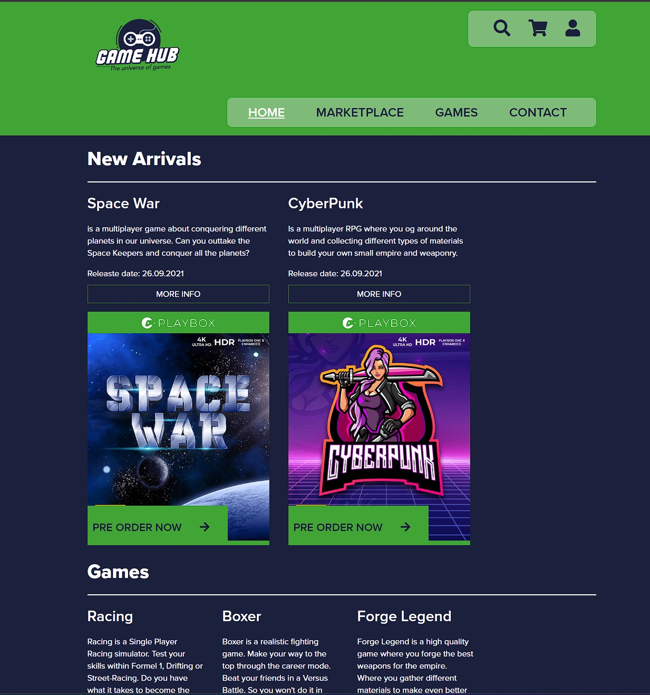

-
GameHub
GameHub is my first project that I worked on. It was built using only HTML & CSS.
You can buy and sell games both retail or from users. The site has been updated with CMS & Javascript
Live site GitHub Repo -
C.S Museum

Community Science Museum was my 1st semester project and was built using HTML & CSS
The site was built for children as an audience. I used animations and colors to make the children like the site more.
Live site GitHub Repo -
Game Frame

Game Frame is my 2nd Semester Exam. It was built using HTML, CSS, Javascript & Wordpress
Game Frame was all about making a blog for gamers. I wanted gamers to get all fresh info in one site. I tried making the site simple.
Live site GitHub Repo